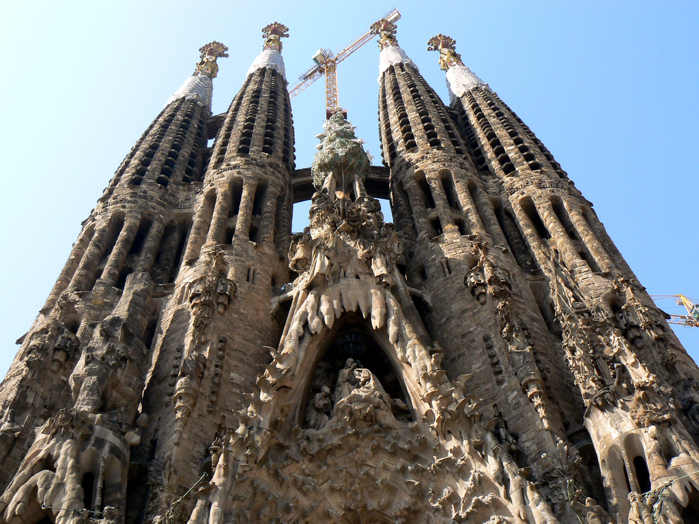
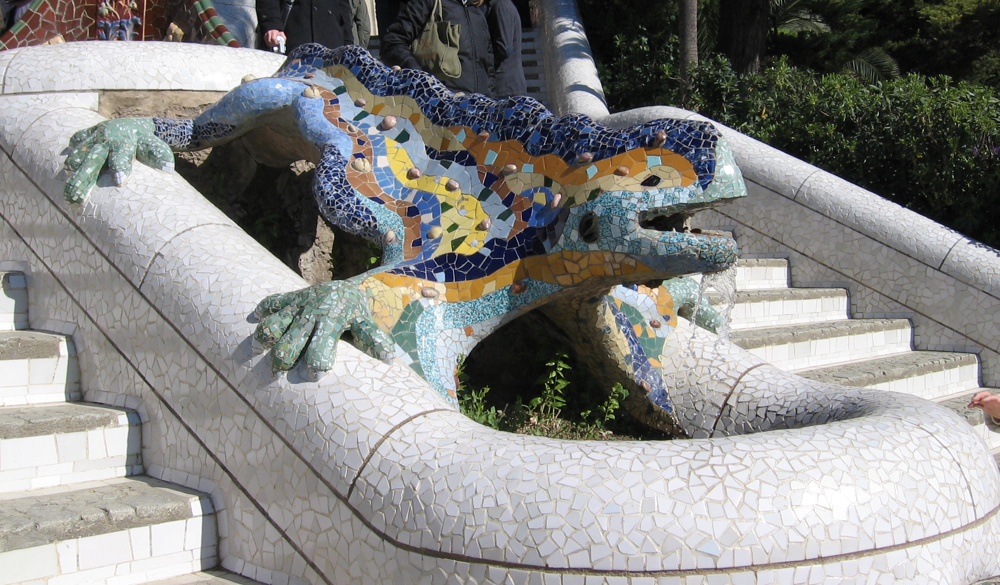

Barcelona's Architect
Antonin Gaudi's incredbile buildings bring millions of tourists to Barcelona each year.
Gaudi's non-conformity, already visible in his teenage years, coupled with his quiet but firm devotion to the church, made a unique foundation for his thoughts and ideas. His search for simplicity...is quite apparent in his work, from the Park Guell and its incredible sculptures and mosaics, to the Church of the Sacred Family and its organic, bulbous towers.
La Sagrada Familia
 The complicated named curiously unfinished masterpiece that is the Expiatory Temple of the Sacred Family is the most visited building in Barcelona. In it, Gaudi combines his vision of nature and architecture with his devotion to his faith. The Sagrada Familia attracts even the non-religious to its doors in large part due to its tragic story and its still unfinished state, of which the everpresent scaffolding cand cranes are permanent reminders.
Park Guell
 The Park Guell always reminds me of Howard Roark in Avn Rand's The FountainHead. Gaudi's .....